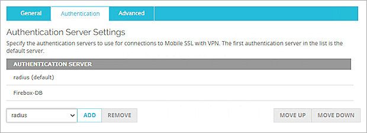
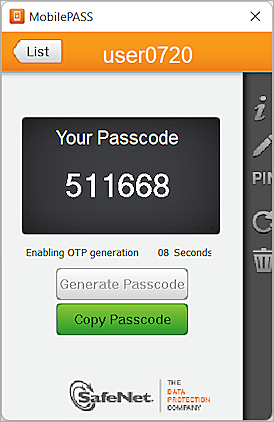

SafeNet Trusted Access uses the RADIUS protocol to communicate with many VPN and access gateway solutions. This document describes how to integrate the SafeNet Trusted Access two-factor authentication solution with the WatchGuard Mobile VPN with SSL client.
Platform and Software
The hardware and software used to complete the steps outlined in this document include:
- Firebox with Fireware v12.8.1
- SafeNet Trusted Access Web UI
- MobilePASS 8.4.6.0
How SafeNet Trusted Access Works
This diagram shows the data flow of a multi-factor authentication transaction with the WatchGuard Firebox.
- A user logs on to the WatchGuard Firebox with a One Time Password (OTP).
- The Firebox sends a RADIUS request with the user credentials to SafeNet Trusted Access for validation.
- SafeNet Trusted Access sends the authentication reply back to the Firebox.
- The user is granted or denied access through the Firebox based on the response from SafeNet Trusted Access.
Configure SafeNet Trusted Access
The deployment of SafeNet Trusted Access multi-factor authentication for a WatchGuard Firebox with the RADIUS protocol requires:
- User stores synchronized to SafeNet Trusted Access.
- Authenticator assignment in SafeNet Trusted Access.
- WatchGuard Firebox added as an authentication node in SafeNet Trusted Access.
Synchronize User Stores to SafeNet Trusted Access
Before SafeNet Trusted Access can authenticate users, you must create a user store in SafeNet Trusted Access for the users who must use multi-factor authentication. User records are created in SafeNet Trusted Access user store with one of the these methods:
- Manually — Use the Create User shortcut to create one user at a time.
- Manually — Import one or more user records in a flat file.
- Automatically — Use the SafeNet Trusted Access Synchronization Agent to synchronize with your Active Directory/LDAP server.
For more information on how to import users to SafeNet Trusted Access, see the section on user creation in the SafeNet Authentication Service Subscriber Account Operator Guide.
In this section, we show you how to use the Create User shortcut to manually create users. To learn more about how to create users, see the SafeNet Trusted Access documentation.
To manually create a user in SafeNet Trusted Access:
- Log in to the SafeNet Trusted Access Web UI with your Operator account and password.
- Click Create User.
The Create User page opens.

- Type the First Name, Last Name, and User ID of the user. In our example, we use user0720 as our user.
- Type a valid email address for the user.
- Click Add.
Authenticator Assignment in SafeNet Trusted Access
SafeNet Trusted Access supports many authentication methods as optional secondary authentication factors for users who authenticate through their WatchGuard Firebox:
- eToken PASS
- RB-1 keypad token
- KT-4 token
- SafeNet GOLD
- SMS tokens
- MP-1 software token
- GrIDsure authentication
- MobilePASS
There are two methods to assign authentication to users:
- Provision Manually — Assign an authenticator to users one at a time
- Provision Rules — Set rules in SafeNet Trusted Access that trigger when group memberships and other user attributes change (an authenticator is assigned automatically to the user)
For more information about how to provision different authentication methods to users in the SafeNet Trusted Access user store, see the SafeNet Trusted Access documentation.
In this document, we describe how to manually provision a MobilePASS authenticator and assign it to user0720.
To assign a MobilePASS authenticator to a user in SafeNet Trusted Access:
- From the User Detail page, select Authentication Methods.
- Click Provision.
- From the Select Authentication Type list, select the MobilePASS authentication type.
- Click Provision.
SafeNet Trusted Access sends an email message to the email address for your user. - Open the email message and click the link to enroll your MobilePASS token. This is an example email message.
If the MobilePASS token enrolls successfully, you see a passcode.
Add WatchGuard Firebox as an Authentication Node in SafeNet Trusted Access
You must add a RADIUS entry in the SafeNet Trusted Access Authentication Nodes module so that SafeNet Trusted Access can receive RADIUS authentication requests from your Firebox. To do this, you must know the IP address of your Firebox and specify the shared secret for SafeNet Trusted Access and the Firebox to use.
To add an authentication node in SafeNet Trusted Access:
- Log in to the SafeNet Trusted Access Web UI with the Operator account and password.
- Select Comms > Auth Nodes.
- Click Add.
- Select the Add Auth Nodes tab.
- In the Auth Node Name text box, type a name to describe this authentication node.
- In the Host Name text box, type the name of the host that will authenticate with SafeNet Trusted Access.
- In the Low IP Address in Range text box, type the IP address of the host that authenticates with SafeNet Trusted Access. This is the Firebox IP address that Mobile VPN with SSL clients connect to, which is usually the primary IP address of the Firebox external interface.
- Select the Configure FreeRADIUS Synchronization check box.
- In the Shared Secret and Confirm Shared Secret text boxes, type a shared secret to use for communication with the Firebox.
- Click Save.
The new Auth Node appears in the Auth Nodes list.
Configure the Firebox
In this example, we use Fireware Web UI to configure our Firebox. You can also use Policy Manager to complete these steps.
Configure the Firebox to Use RADIUS Server Authentication
To authenticate with SafeNet Trusted Access, you must enable the RADIUS server on the Firebox.
To enable the RADIUS server, from Fireware Web UI:
- Log in to Fireware Web UI at https://<IP address of Firebox>:8080.
- Select Authentication > Servers > RADIUS.
- Click Add.
- In the Domain Name text box, type a domain name. In this example, we use radius as the domain name.
- In the IP Address text box, type the Primary RADIUS Server IP of the SafeNet Trusted Access. To find this in SafeNet Trusted Access, select Comms>AuthNodes. Click the Auth Nodes link. See the Add WatchGuard Firebox as an Authentication Node in SafeNet Trusted Access steps.
- In the Port text box, type the port used by SafeNet Trusted Access for RADIUS authentication. The default is port 1812.
- In the Shared Secret and Confirm Secret text boxes, type the shared secret you configured in the Add WatchGuard Firebox as an Authentication Node in SafeNet Trusted Access steps.
- Click Save.
Add Users
On the Firebox, add a new user to log on to the RADIUS server.
To add a user, from Fireware Web UI:
- Select Authentication > Users and Groups.
- Click Add.
- Select User.
- In the Name text box, type the same User ID you created in SafeNet Trusted Access. In our example, we use user0720.
- From the Authentication Server drop-down list, select the domain name you specified in the Configure the Firebox to Use RADIUS Server Authentication steps. In our example, we use radius.
- Click OK.
The user is added to the Users and Groups list on the Firebox.
- Click Save.
Configure Mobile VPN with SSL with RADIUS Authentication
To use RADIUS authentication for user connections with the Mobile VPN with SSL client, enable Mobile VPN with SSL and configure it to use RADIUS for authentication.
To configure Mobile VPN with SSL with RADIUS authentication:
- Select VPN > Mobile VPN.
- In the SSL section, click Configure.
- Select the Activate Mobile VPN with SSL check box.

- In the Primary text box, type the IP address to which Mobile VPN with SSL clients connect. This is the IP address of the Firebox.
- Select the Authentication tab.
- From the drop-down list, select the domain name you specified in the Configure the Firebox to Use RADIUS Server Authentication steps. In our example, we use radius.
- Click Add.
- In the Authentication Server section, select radius.
- To make radius the default authentication server, click Move Up.

- In the Users and Groups section, select the user0720 checkbox.
- Click Save.
Test the Integration
In this example, we use the Mobile VPN with SSL client to test user authentication.
Download the Mobile VPN with SSL Client Software from the Firebox
- Browse to the Mobile VPN with SSL VPN web portal. The IP address is https://<IP of Firebox>/sslvpn.html.
- In the Username text box, type the user name of a user defined in SafeNet Trusted Access.
- In the Password text box, type the password. In our example, we use MobilePASS to generate a passcode to use in the Password text box.

- If necessary, from the Domain drop-down list, select RADIUS.
- Click Login.
If the user authenticates successfully, the next authentication page opens.

- Generate a new passcode in MobilePASS and type the passcode in the text box.
- Click Apply.
After successful authentication, the download page opens.
- Download and install the Mobile VPN with SSL client for your operating system.
Mobile VPN with SSL Client Authentication
After you download and install the Mobile VPN with SSL client on your computer, you can use the same authentication process to connect to the Firebox with the Mobile VPN with SSL client.